source("utils.R")
load("data/03.all_data.Rdata")Fit a BART model
Predict poc values from environmental data and plankton diversity.
Set-up and load data
Data inspection
Let’s have a look at our response variable: POC value. We do not need to inspect response variables as the model we are going to use are robust to non-normal distributions.
df %>% ggplot() + geom_histogram(aes(x = poc), bins = 100)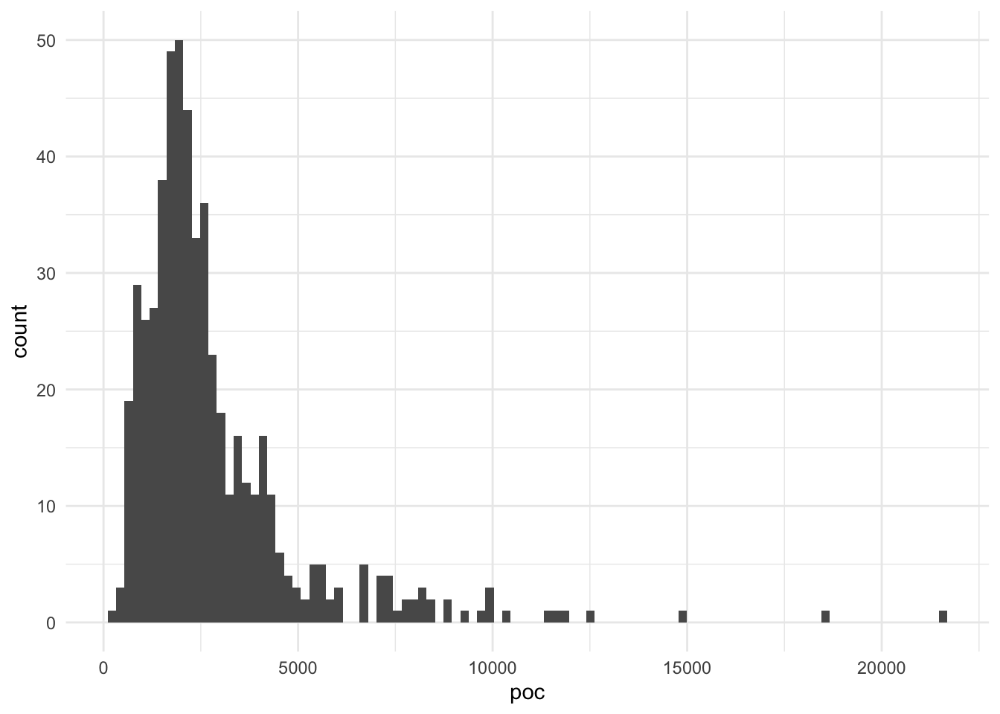
The distribution is not normal, this is problematic. Let’s try a log-transformation.
df <- df %>% mutate(poc_log = log(poc))
df %>% ggplot() + geom_histogram(aes(x = poc_log), bins = 100)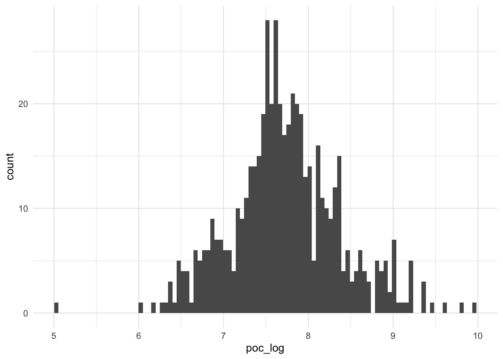
This is much better. We’ll then try to predict log(poc).
Data split
Let’s take 80% of the data to fit the model, and keep 20% to test the model at the very end. We stratify our split by poc_log, the response value, so that both training and testing sets are representative of the whole range of values.
# Train VS test, stratified
df_split <- initial_split(df, prop = 0.8, strata = poc_log)
df_train <- training(df_split)
df_test <- testing(df_split)To evaluate model performance during training, we’ll use cross-validation on the training set, with 10 folds, again stratified by poc_log.
# Cross-validation, 10 folds, stratified
df_folds <- vfold_cv(df_train, v = 10, strata = poc_log)Model definition
Let’s define a BART regression model, with tunable hyperparameters:
trees: number of treesprior_terminal_node_coefprior_terminal_node_expo
# Define a BART model with hyperparameters to tune
bart_spec <- parsnip::bart(
trees = tune(),
prior_terminal_node_coef = tune(),
prior_terminal_node_expo = tune()
) %>%
set_engine("dbarts") %>%
set_mode("regression")
extract_parameter_set_dials(bart_spec)Collection of 3 parameters for tuning
identifier type object
trees trees nparam[+]
prior_terminal_node_coef prior_terminal_node_coef nparam[+]
prior_terminal_node_expo prior_terminal_node_expo nparam[+]The model will be run on 14 cores in parallel.
Recipe
Let’s use a recipe to define the model formula and assign roles to variables. We want to predict poc_log from all other variables expect lon, lat and original poc values, yet it is convenient to keep these in the dataset.
bart_rec <- recipe(poc_log ~ ., data = df_train) %>%
update_role(lon, lat, new_role = "coords") %>% # These variables can be retained in the data but not included in the model
update_role(poc, new_role = "untransformed outcome")
summary(bart_rec)# A tibble: 15 × 4
variable type role source
<chr> <list> <chr> <chr>
1 poc <chr [2]> untransformed outcome original
2 lon <chr [2]> coords original
3 lat <chr [2]> coords original
4 t_ric <chr [2]> predictor original
5 t_shannon <chr [2]> predictor original
6 t_pielou <chr [2]> predictor original
7 temperature_mean <chr [2]> predictor original
8 salinity_mean <chr [2]> predictor original
9 AOU_mean <chr [2]> predictor original
10 silicate_mean <chr [2]> predictor original
11 phosphate_mean <chr [2]> predictor original
12 nitrate_mean <chr [2]> predictor original
13 oxygen_mean <chr [2]> predictor original
14 pycno_mean <chr [2]> predictor original
15 poc_log <chr [2]> outcome originalWorkflow
Set-up the workflow with the recipe and the model.
bart_wflow <- workflow() %>%
add_recipe(bart_rec) %>%
add_model(bart_spec)Gridsearch
It is now time to perform the gridsearch to find the best hyperparameters for our model. We first need to define a grid with the hyperparameters we want to try. We use grid_latin_hypercube to generate a space-filling grid of size 30.
bart_grid <- grid_latin_hypercube(
trees(),
prior_terminal_node_coef(),
prior_terminal_node_expo(),
size = 30
)
bart_grid# A tibble: 30 × 3
trees prior_terminal_node_coef prior_terminal_node_expo
<int> <dbl> <dbl>
1 842 0.908 1.60
2 1902 0.835 1.15
3 470 0.502 1.00
4 940 0.484 1.46
5 1657 0.00389 2.05
6 696 0.576 2.00
7 932 0.974 2.31
8 639 0.212 1.92
9 1779 0.196 2.81
10 332 0.617 2.97
# ℹ 20 more rowsTune the grid to find the best hyperparameters, in parallel. This is done on our cross-validation folds: for each fold, a model is fitted on training data and evaluated on validation data.
doParallel::registerDoParallel()
bart_res <- tune_grid(
bart_wflow,
resamples = df_folds,
grid = bart_grid,
control = control_grid(save_pred = TRUE)
)
autoplot(bart_res)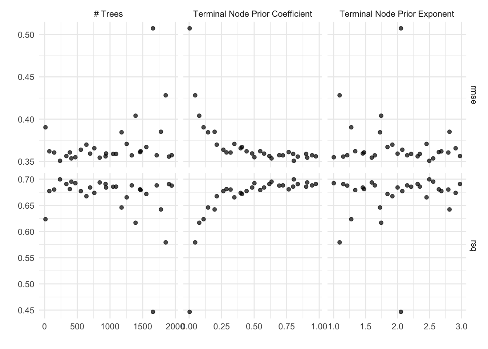
Select the best set of hyperparameters based on rmse value.
show_best(bart_res, metric = "rmse")# A tibble: 5 × 9
trees prior_terminal_node_coef prior_terminal_node_…¹ .metric .estimator mean
<int> <dbl> <dbl> <chr> <chr> <dbl>
1 235 0.805 2.49 rmse standard 0.351
2 409 0.634 2.56 rmse standard 0.354
3 842 0.908 1.60 rmse standard 0.354
4 470 0.502 1.00 rmse standard 0.355
5 1902 0.835 1.15 rmse standard 0.356
# ℹ abbreviated name: ¹prior_terminal_node_expo
# ℹ 3 more variables: n <int>, std_err <dbl>, .config <chr>best_bart <- select_best(bart_res, metric = "rmse")Finalize
Let’s now finalize our model with the selected set of hyperparameters.
final_bart <- finalize_workflow(
bart_wflow,
best_bart
)Fit the model on training data.
final_res <- fit(final_bart, df_train)Predict test data, and apply exp transformation as we predict the log of poc values. Still, we will evaluate model performances with predictions of poc_log as it is closer to a normal distribution.
preds <- augment(final_res, new_data = df_test) %>%
rename(.pred_logged = .pred) %>%
mutate(.pred = exp(.pred_logged))Model evaluation
Prediction metrics
Let’s have a look at prediction metrics on the test set.
rmse(preds, truth = poc_log, estimate = .pred_logged)# A tibble: 1 × 3
.metric .estimator .estimate
<chr> <chr> <dbl>
1 rmse standard 0.370rsq(preds, truth = poc_log, estimate = .pred_logged)# A tibble: 1 × 3
.metric .estimator .estimate
<chr> <chr> <dbl>
1 rsq standard 0.691Prediction VS truth
Plot predictions VS truth, both in the log-transformed space and in the non log-transformed space.
preds %>%
ggplot() +
geom_point(aes(x = poc_log, y = .pred_logged)) +
geom_abline(slope = 1, color = "red") +
labs(title = "Pred VS truth in log-transformed space")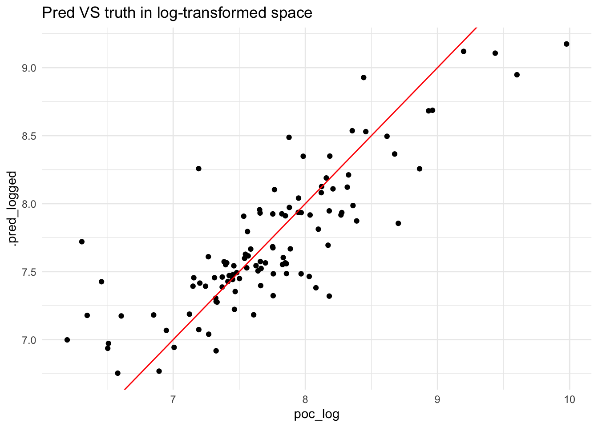
preds %>%
ggplot() +
geom_point(aes(x = poc, y = .pred)) +
geom_abline(slope = 1, color = "red") +
labs(title = "Pred VS truth")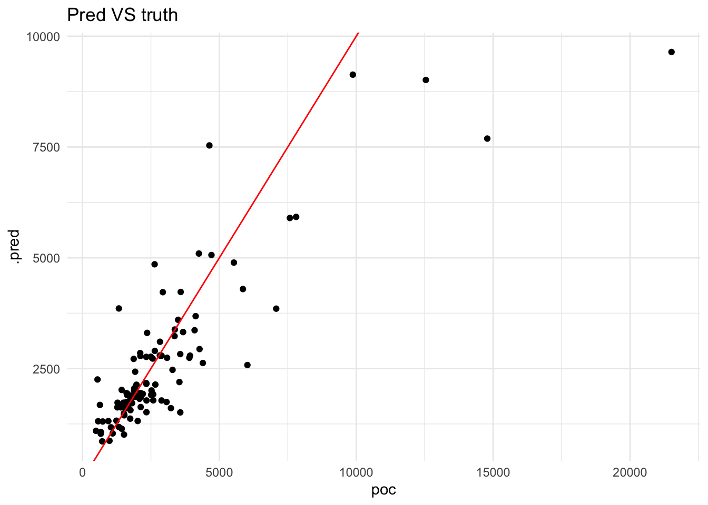
Residuals
Finally, let’s have a look at residuals.
preds %>%
mutate(residuals = .pred_logged - poc_log) %>%
ggplot() +
geom_density(aes(x = residuals)) +
labs(x = "Residuals")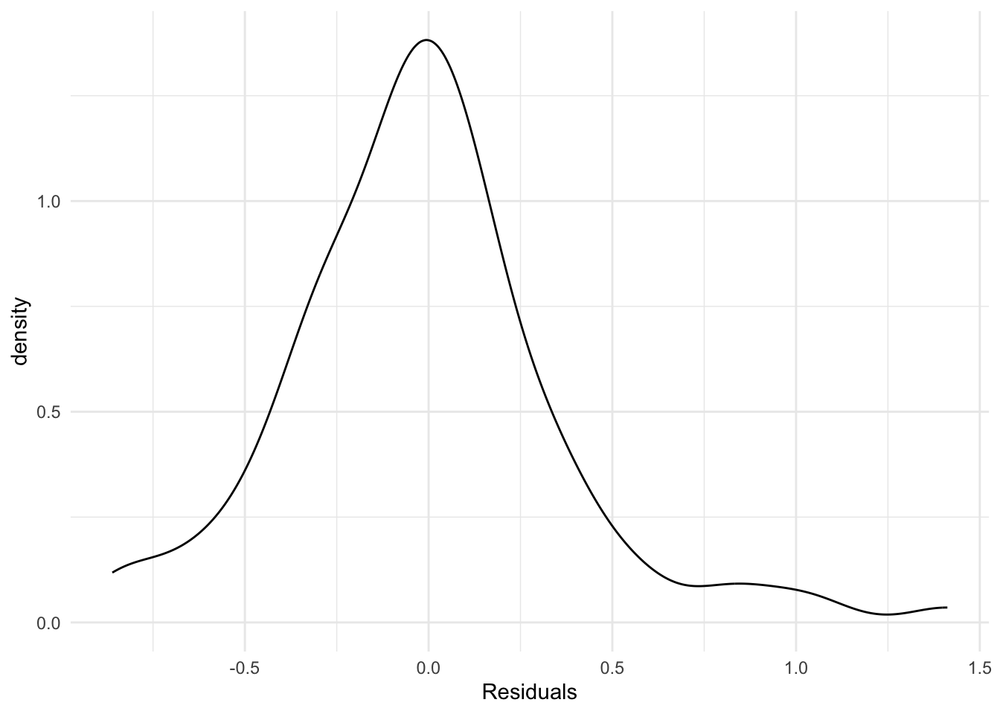
Model interpretation
Let’s feed our model to explain_tidymodel, but first we need to select predictors only.
# Select only predictors
vip_train <- bart_rec %>% prep() %>% bake(new_data = NULL, all_predictors())
# Explainer
bart_explain <-
explain_tidymodels(
model = extract_fit_parsnip(final_res),
data = vip_train,
y = df_train %>% pull(poc_log)
)Preparation of a new explainer is initiated
-> model label : model_fit ( default )
-> data : 432 rows 11 cols
-> data : tibble converted into a data.frame
-> target variable : 432 values
-> predict function : yhat.model_fit will be used ( default )
-> predicted values : No value for predict function target column. ( default )
-> model_info : package parsnip , ver. 1.1.1 , task regression ( default )
-> predicted values : numerical, min = 6.670863 , mean = 7.72364 , max = 9.457707
-> residual function : difference between y and yhat ( default )
-> residuals : numerical, min = -1.739525 , mean = -8.745922e-05 , max = 0.6201479
A new explainer has been created! Variable importance
bart_var_imp <- model_parts(bart_explain)
ggplot_imp(bart_var_imp)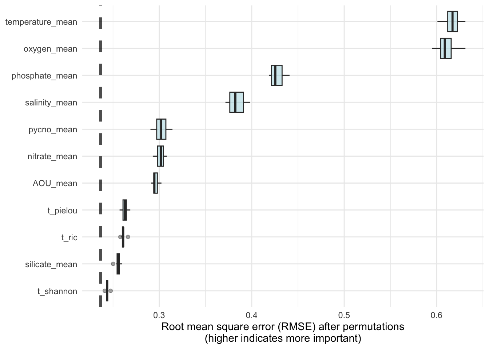
Partial dependence plots
bart_pdp_temp <- model_profile(explainer = bart_explain, variables = c("temperature_mean"))
ggplot_pdp(bart_pdp_temp, temperature_mean) +
labs(x = "Temperature_mean", y = "Logged predicted POC")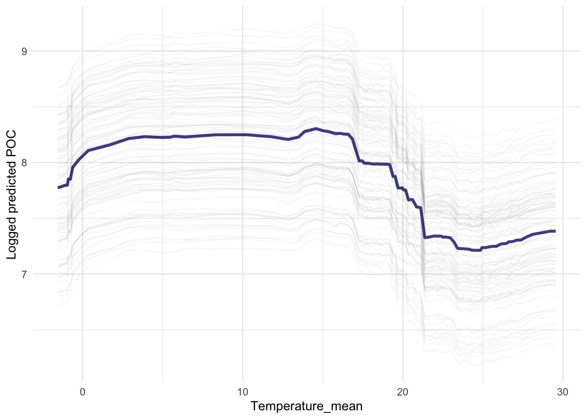
bart_pdp_phos <- model_profile(explainer = bart_explain, variables = c("phosphate_mean"))
ggplot_pdp(bart_pdp_phos, phosphate_mean) +
labs(x = "Phosphate_mean", y = "Logged predicted POC")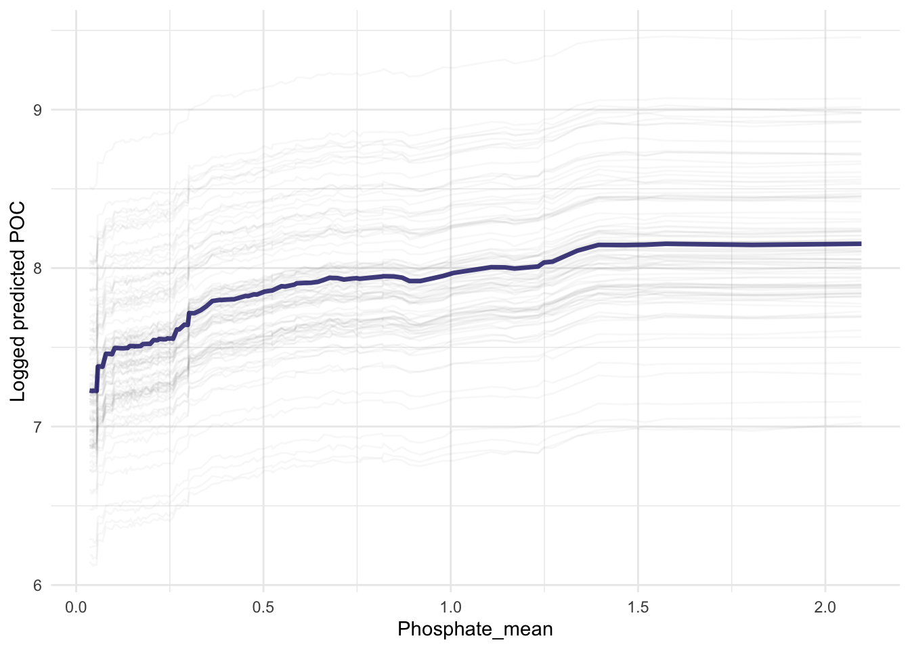
bart_pdp_nit <- model_profile(explainer = bart_explain, variables = c("nitrate_mean"))
ggplot_pdp(bart_pdp_nit, nitrate_mean) +
labs(x = "Nitrate_mean", y = "Logged predicted POC")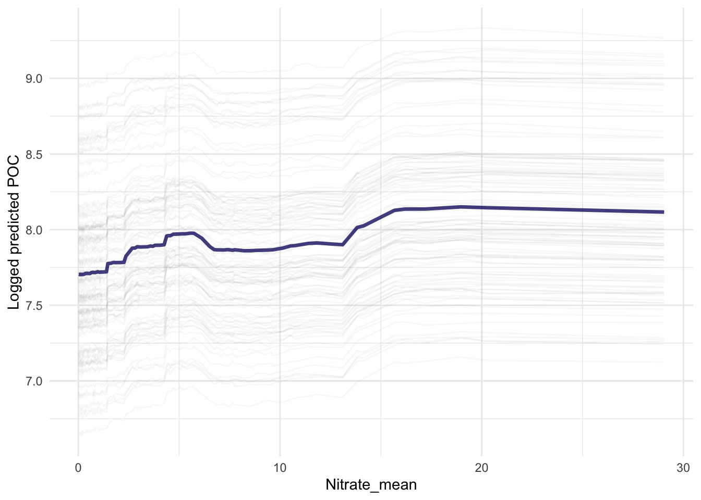
bart_pdp_pielou <- model_profile(explainer = bart_explain, variables = c("t_pielou"))
ggplot_pdp(bart_pdp_pielou, t_pielou) +
labs(x = "Pielou", y = "Logged predicted POC")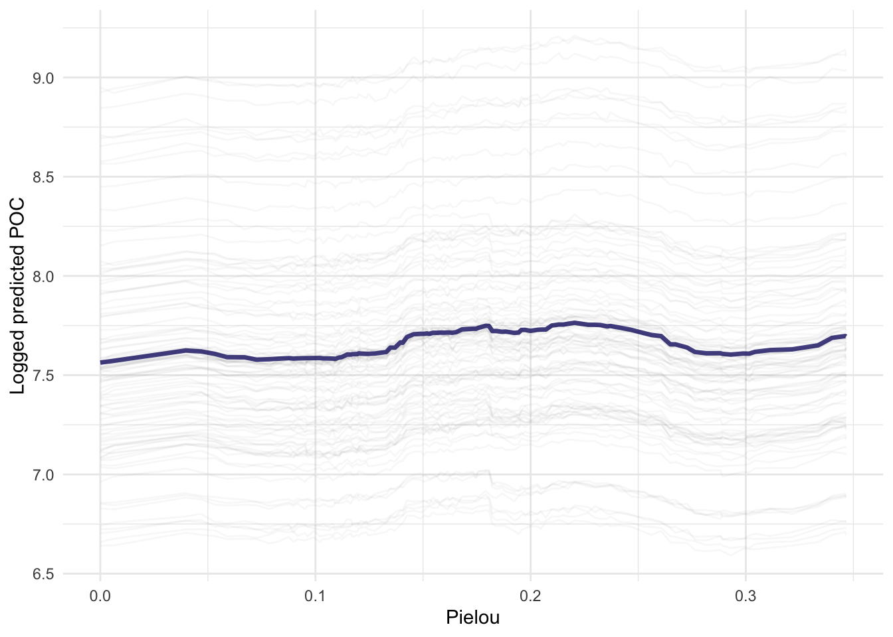
Conclusion
Plankton diversity seems to have low effect on poc values compared to environment, but still not negligible.